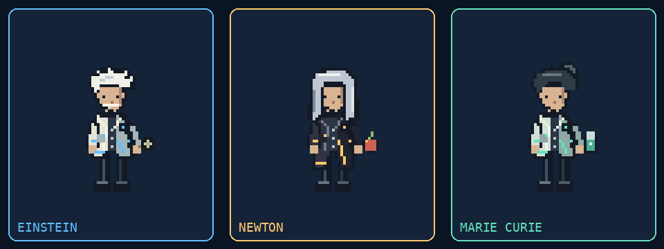

MASTERY CHAMPION / 01
The Unified
Theory.
Three minds. One body. Every discovery has a cost.
Build experiments through relativity, mechanics and chemistry. Balance the charge, prepare the geometry, then commit.

The notebook
Expectedᵢ = preferredᵢ × total / preferred total Error = max(|actualᵢ − expectedᵢ| / expectedᵢ) Instability = round(100 × error + 80 × max(0, total/preferred − 1.25)) 0–20 stable / 21–40 strained / 41–70 unstable / 71–100 critical Minimum total: 75%. Every token requires at least 1 CU.
Compose an experiment
Up to five stages. Outputs share their original damage budget.
Trajectory study
Select a skill, balance its charge, and activate a preview.
THE WALKING UNIFIED EXPERIMENT
Mastery artwork
Loading original game sprites…
Compact scientists keep their coats and hand-held props readable at idle. Direct transformations use eight frames over 0.4 seconds; larger cosmic effects appear during skills. This viewer demonstrates animations; trajectory collisions remain schematic in the study above.
PRECISION, THROUGH PRACTICE
Eight mastery ranks
All 75 recipes are always available. Higher mastery improves charge allocation, review, prediction and experiment choice. Base token speed stays constant.
This comparison runs ten deterministic notebook trials per rank through all 75 recipes. It measures charge and typing errors; it does not simulate the game’s AI planner or combat engine.
100 CU · 4/s combat · 8/s after 5s quiet
12 material · +1 every 3s · movement-earned momentum
| Rank | Commits | Failures | Duration |
|---|